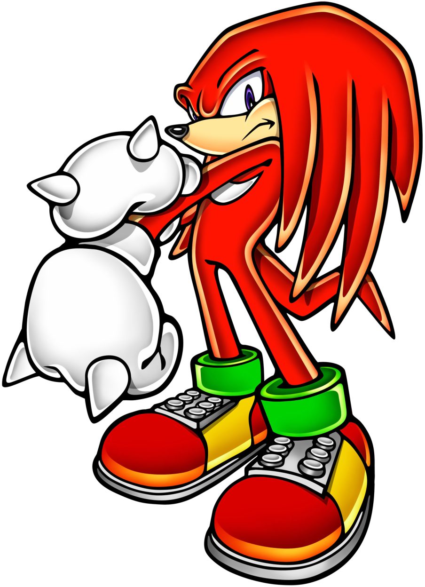
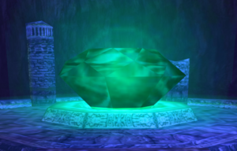

Sonic Adventure 2 var fyrsti Sonic leikurinn sem Tomoya samdi fyrir. Þá var hann undir leiðsögn Jun Senoues.
Tomoya samdi mjög fá lög fyrir þennan leik en hann sá um að semja nokkur rapp-lög sem voru flutt af bandaríkjamanninum Hunnid P.
Hvað er í gangi í leiknum?
Í Sonic Adventure 2 er hægt að spila sem fleiri persónur en bara Sonic.
Þetta lag fjallar í rauninni alls ekki um Sonic heldur um Knuckles the Echidna, einn af vinum Sonic's.
Knuckles er harður gaur, alvarlegur og aðeins meiri intróvert en Sonic. Hann getur klifrað upp veggi, svifið í loftinu og barið óvini með risastóru hnúunum sínum (hann heitir Knuckles eftir allt).
Knuckles hefur það hlutverk að verja risastórann smaragð sem heitir The Master Emerald. Smaragðurinn býr yfir miklum krafti, en síðan brotnar hann í marga litla bita. Knuckles verður að leyta að bitunum og koma í veg fyrir að þeir falli í röngu hendurnar.
Í þessu lagi er Knuckles staddur í Pumpkin Hill, sem er mjög hrekkjavökulegur staður. Lagið er sagt frá sjónarhorni Knuckles og veitir innsýn í hugsanir og tilfinningar hans á meðan hann fer í gegnum borðið.

Texti
You know me, the fighting freak Knuckles,
And we're at Pumpkin Hill,
You ready?
I ain't gonna let it get to me, I'm just gonna creep,
Down in Pumpkin Hill I gots to find my lost piece.
I know that it's here, I can sense it in my feet,
The great Emerald's power allows me to feel.
I can't see a thing but it's around somewhere,
I'm gonna hold my head 'cause I have no fear.
This probably seems crazy, crazy, a graveyard theory,
A ghost tried to approach me and got leery.
Asked him a question and he vanished in a second,
I'm walkin' through valleys cryin' pumpkin in the alley.
Didn't seem happy but they sure tried to get me,
Had to back 'em up with the fist, metal crack 'em.
I'm hearing someone sayin' "You a chicken, don't be scared!"
It had to be the wind, 'cause nobody wasn't there.
I searched and I searched as I climbed up the wall,
And then I started to fly, I went in deeper!
Let it get to me? I'm just gonna creep,
Down in Pumpkin Hill I gots to find my lost piece.
I know that it's here, I sense it in my feet,
The great Emerald's power allows me to feel.
I can't see a thing but it's around somewhere,
I gotta hold my head, I have no fear.
It probably seems crazy, crazy, a graveyard theory,
A ghost tried to approach me, he got leery.
(This is Knuckles, who fears none.)
(It's real deal when it comes to my name, kid!)
I ain't gonna let it get to me, I'm just gonna creep,
Down in Pumpkin Hill I gots to find my lost piece.
I know that it's here, I can sense it in my feet,
The great Emerald's power allows me to feel.
I can't see a thing but it's around somewhere,
I'm gonna hold my head 'cause I have no fear.
This probably seems crazy, crazy, a graveyard theory,
A ghost tried to approach me and got leery.
Asked him a question and he vanished in a second,
I'm walkin' through valleys cryin' pumpkin in the alley.
Didn't seem happy but they sure tried to get me,
Had to back 'em up with the fist, metal crack 'em.
I'm hearing someone sayin' "You a chicken, don't be scared!"
It had to be the wind, 'cause nobody wasn't there.
I searched and I searched as I climbed up the wall,
And then I started to fly, I went in deeper!
Let it get to me? I'm just gonna creep,
Down in Pumpkin Hill I gots to find my lost piece.
I know that it's here, I sense it in my feet,
The great Emerald's power allows me to feel.
I can't see a thing but it's around somewhere,
I gotta hold my head, I have no fear.
It probably seems crazy, crazy, a graveyard theory,
A ghost tried to approach me, he got leery.
(Spooky up in here, it's crazy in here,)
(We still gon' keep it goin', I'm Knuckles.)
(Nobody scares me,)
(Whoever want it, bring it!)
(I don't care, we 'ka do this.)
(Then come step up to the plate, and meet your match,)
(It ain't no thang.)

Huglæg greining
Mér finnst rapplögin um Knuckles bæði fyndin og skemmtileg. Þetta hjálpar til með að selja spilurum þá hugmynd að Knuckles sé svalur gæi.
Sumir hafa talað um það að Knuckles í Sonic Adventure 2 hafi verið undir áhrifum af menningu blökkumanna. Ég sé alveg tenginuna þar sem að hann er með dreadlocks og hlustar á rapp. Það má vel vera að Knuckles sé ein af fyrstu svörtu persónunum í sögu tölvuleikjanna!
Pumpkin Hill er mjög catchy lag og er að mínu mati besta rapplagið með Knuckles. Takturinn goes hard og textinn er skemmtilegur og passar vel við borðið. Það er greinilegt að Knuckles er smá hræddur en lætur sig samt hafa það til að bjarga The Master Emerald.